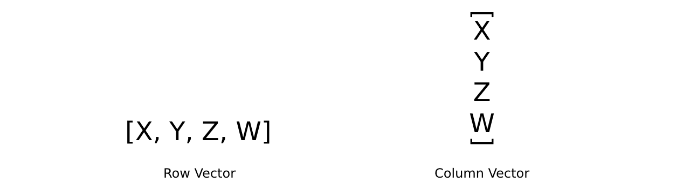

A vector is often used to represent a point in space, or a direction with magnitude. A matrix is often used to encode transformations such as "move 10 units on the X axis". Matrix transformations will be the topic of the second blog in this series.
The linear transformation stored in a matrix can be applied to a vector if the matrix is multiplied by the vector. For now, let's assume we are working with 4x4 matrices and 4 component vectors.
A 4 component vector can be considered a row matrix or a column matrix. The difference is only theoretical and in expression, it's stored in memory the same regardless of which convention is chosen. The choice of this convention labels vectors as row vectors or column vectors

The distinction between row and column vectors is multiplication order. We are now treating vectors as skinny matrices, to multiply two matrices their inner dimensions must match. This means a vector and a matrix can be multiplied in one of two ways:
1x4 * 4x4. Row vectors (1 row 4 columns) can only be pre-multiplied. The result is another 1x4 row vector.4x4 * 4x1. Column vectors (4 rows, 1 column) can only be post-multiplied. The result is another 4x1 column vector.This again causes confusion when it comes to OpenGL and DirectX. OpenGL for example has a right to left multiplication order (post multiplication). To maintain the right to left multiplication with a vector as well OpenGL has to use column vectors. DirectX on the other hand uses left to right (pre) multiplication, to maintain this convention they have to use row vectors.
This blog will follow OpenGL style. This means column matrices, column vectors, post multiplication, and everything stored using column storage.
vec4 Mul(mat4 m, vec4 v) {
return vec4(
v.x * m.v[0] + v.y * m.v[4] + v.z * m.v[8] + v.w * m.v[12],
v.x * m.v[1] + v.y * m.v[5] + v.z * m.v[9] + v.w * m.v[13],
v.x * m.v[2] + v.y * m.v[6] + v.z * m.v[10] + v.w * m.v[14],
v.x * m.v[3] + v.y * m.v[8] + v.z * m.v[11] + v.w * m.v[15]
);
}